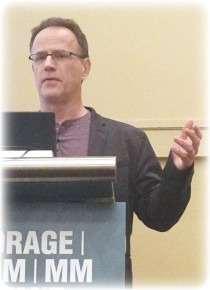

Improving pseudo filesystems
The eventfs filesystem provides an interface to the tracepoints that are available to be used by various Linux tracing tools (e.g. ftrace, perf, uprobes, etc.); it is meant to be a version of the tracefs filesystem that dynamically allocates its entries as needed. The goal is to reduce the memory required for multiple instances of tracefs, as Steven Rostedt described in a session at the 2022 Linux Storage, Filesystem, Memory Management, and BPF Summit. He returned to the 2024 edition of the summit to talk further about how to make pseudo (or virtual) filesystems, such as tracefs/eventfs, more like regular Linux filesystems, where the directory entries (dentries) and inodes are only created (and cached) as needed.
Background
He began with some background on eventfs; it is based on tracefs, which was itself based on debugfs. Because of the interface that debugfs provides, eventfs maintained dentries for each of its files and directories. Around the same time that Rostedt proposed a session on virtual filesystems for this year, eventfs was being extensively reworked to avoid a number of problems, some of which were security related. As part of that, Linus Torvalds made it clear (in his inimitable way) that a dentry-centric approach was not right.

At the session in 2022, Christian Brauner had suggested using kernfs as the basis for eventfs. When Rostedt looked at that, he saw that only sysfs and control groups used kernfs, and it did not look like it applied to what he was trying to do. After playing with it more recently, he can see that it might make sense to convert all of debugfs and tracefs to use kernfs, but it will not work for eventfs, he said.
One of the things he is working on is tracing infrastructure for Chromebooks, some of which have only 2GB of RAM; "memory is very much a hot commodity there". There are "thousands and thousands of files" in eventfs; new instances of eventfs create a new ring buffer, but they also duplicate most of the files, which uses a lot of memory. So, eventfs was turned into a dynamic filesystem that did not create dentries and inodes until they were actually needed, which provided substantial memory savings.
The crux of the disagreement with Torvalds is based in Rostedt's lack of understanding of how filesystems are supposed to be implemented, coupled with the API for debugfs. Torvalds asked Rostedt why dentries were being created for eventfs before the filesystem was even mounted. Creating a file with debugfs_create_file() returns a dentry, however, so Rostedt thought that was the way it should be done. Al Viro pointed out that eventfs went far beyond what debugfs had ever done, though, which "was really scary"; he is "not fond" of what debugfs does, but eventfs took things much further. Things are "much saner" after the fixes that went into eventfs, Viro said.
Rostedt said that now that he has learned more, he is concerned that debugfs needs attention; "maybe we should update it". Viro noted that debugfs has some object-lifetime problems as well as a lack of "sane exclusion" when doing I/O on files that are being removed. Rostedt wondered if debugfs should be switched to using kernfs, but Viro said that "kernfs has different issues".
Kernfs is not fully namespace-aware for one thing, Viro said. Brauner suggested that debugfs did not need namespace support, but Rostedt and Viro said that people want to be able to mount debugfs inside containers. "That's insane on the face of it", Brauner said; "we are not going to do this".
One of the problems that he has encountered, Rostedt said, is that developers start by using debugfs for some project, but that once it gains some traction, they want to move it to its own filesystem. Debugfs is not really a good basis for that as it stands. That's what happened to him; "I'm here to say, let's not have someone else follow my steps". For that reason, he thinks debugfs should be switched to a better interface that people can use as a basis for their filesystems.
The path?
After some discussion between Brauner and Viro about the current status of debugfs, Rostedt shifted gears slightly and asked what the proper path is for kernel developers who want to move their filesystems from debugfs to a real filesystem. Viro reiterated some of the concerns he has with debugfs, including the ability for applications to continue reading from open file descriptors after the debugfs file has been removed.
Rostedt wondered about the use of dentries in the debugfs interface; he thought that there might well be memory concerns for those who are mounting it. Brauner said that there is no real control over how many files there are in debugfs, since any random driver can add entries whenever it wants. Writing to one of those files might deadlock or crash the system. For those and other reasons, "mounting debugfs on a production system is ... adventurous".
Dave Chinner said that Rostedt was asking the wrong question. Starting with debugfs and then trying to move that code to a production filesystem is wrong. If it is destined for production, it should be developed within sysfs, but Rostedt noted that sysfs is restrictive; sysfs files are supposed to only have a single value. Chinner said that the restriction was often ignored.
Developers who are not filesystem-focused choose debugfs as a starting point because it is easy to do so, Rostedt said; they are typically just doing it for debug purposes in the early going. Then the functionality turns out to be useful, but now the code has been built around debugfs, which is "not the way to do it", he said.
"Ask the experts", Chinner suggested, but Rostedt said that "a lot of times the experts are busy doing their own thing". He had posted versions of his work along the way, he said, but rarely got any comments from the experts.
Brauner and Viro talked about some approaches that might scale reasonably for the eventfs use case, but did not really come to a conclusion. Part of the problem, Ted Ts'o said, is that "there is no one general solution" to point kernel developers at; debugfs is perfectly fine for a small number of files and when just a single instance is needed. For situations with multiple instances and millions of files, there is no existing code to point to. So it is not possible to give advice that pertains to all of the possible filesystems that may be needed.
But Rostedt said that he was not trying to solve the eventfs problem—it is a specialized use case—but wanted to figure out what to tell developers who want to move a fairly simple debugfs-based filesystem to a real filesystem. Brauner said that there are some questions that need to be answered first: is there a single instance of the filesystem or does each mount create a new one? Does the filesystem need to be namespace-aware? Without those answers, it is difficult to say what the proper path might be.
As time was running down, Rostedt said that what was being said in the session "was like gold to me". He thinks that what was discussed needs to be fully documented and that the questions that need to be answered are obviously a big part of that. Viro said that sounded like a "frequently asked questions" document, which elicited some laughter. Rostedt agreed, though, and asked if there was any documentation of that sort. Brauner said that there was not, "and I think that is a fair point"; for example, most filesystems these days will need to be namespace-aware but there are not really good examples to point developers to. Whether that will result in documentation patches was not clear, however.
| Index entries for this article | |
|---|---|
| Kernel | Filesystems/Pseudo |
| Conference | Storage, Filesystem, Memory-Management and BPF Summit/2024 |